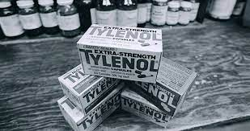

parabens! Descobrimos que Stanley morreu porque tomou tylenol e estava invenenado, consequentemente também descobrimos que Adan Junes também havia consumido o mesmo medicamento
Entre as vitimas , três eram da mesma família. durante a investigação ,os detetives perceberam que as embalagens dos remédios de todas as vitimas eram do mesmo lote e cheiravam a amêndoas (um possível sinal de cianeto)

Escolha sabiamente a opção correta para solucionar o caso.